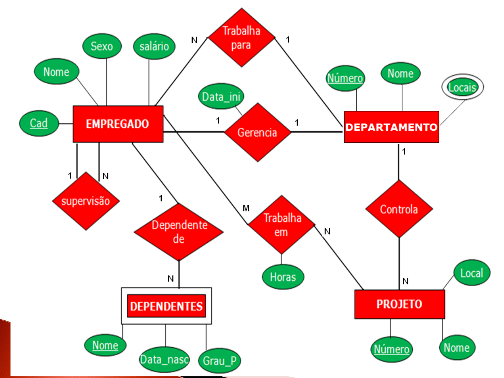
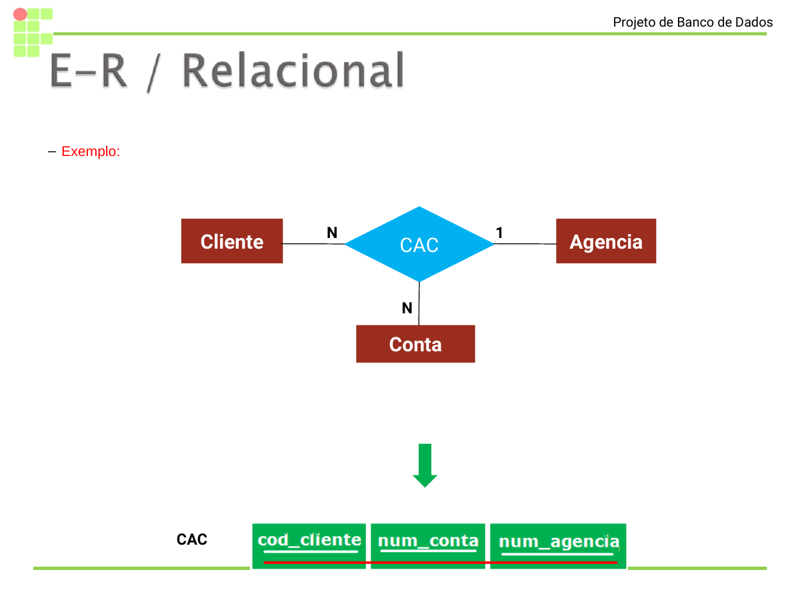
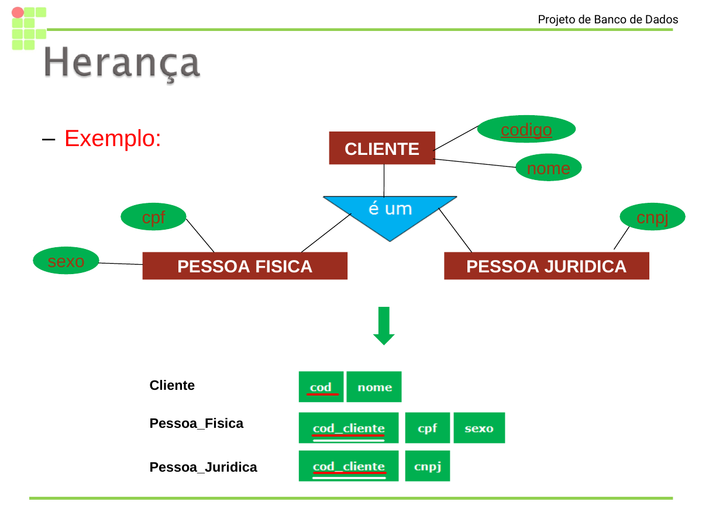
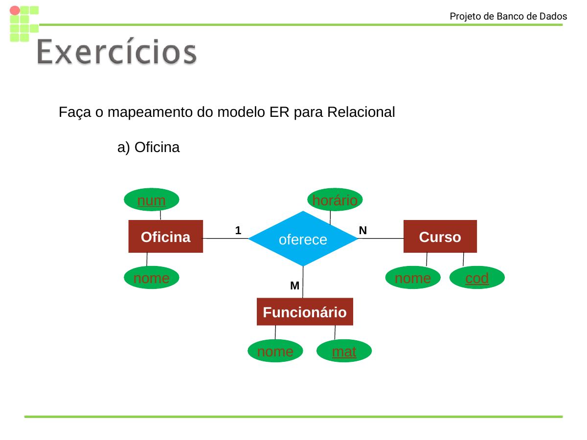
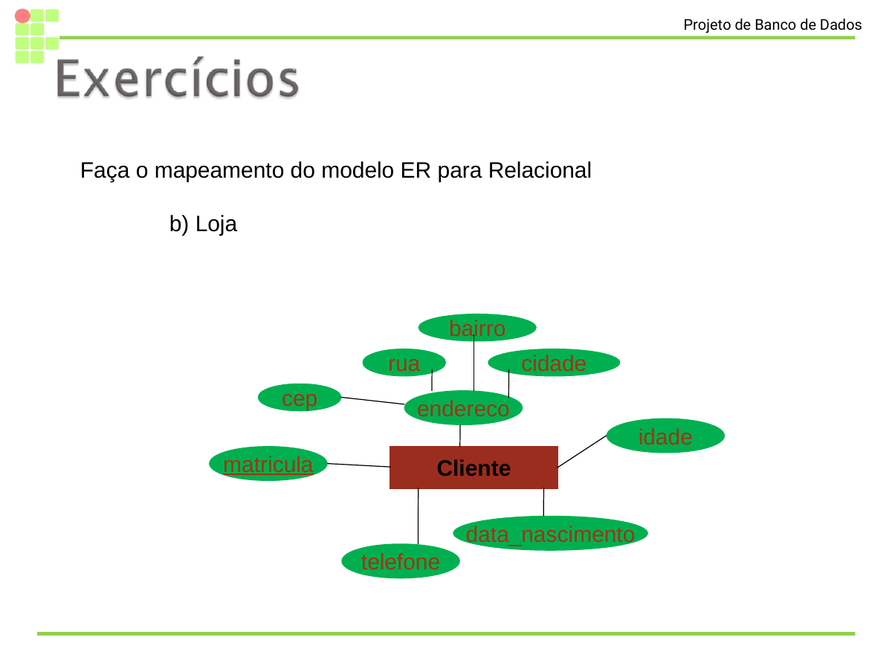
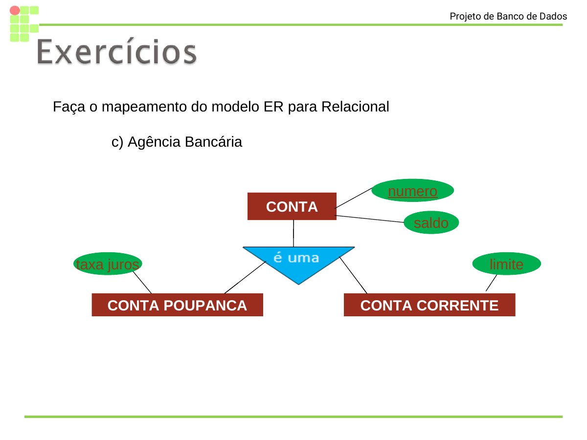

Do Modelo Entidade-Relacionamento ao esquema lógico: relações, atributos, tuplas, domínios, chaves, integridade referencial e regras de mapeamento ER -> Relacional.
Base: Modelo-Relacional-Introducao-01-03-2024_Slide-18.pdf, slides 17 a 55.
Origem, ideia central, relação, tabela, tupla, atributo e domínio.
Estrutura de tabelas, tipos de dados, chaves primárias, candidatas, estrangeiras e compostas.
Entidades, relacionamentos 1:1, 1:N, N:M, n-ários, atributos multivalorados, compostos e herança.
O modelo relacional foi introduzido por Codd como uma forma matemática e rigorosa de representar dados.
O modelo usa ideias da teoria dos conjuntos e da lógica de primeira ordem para tratar dados como relações.
A adoção ampla ocorreu a partir de meados da década de 1980, quando os SGBDs relacionais se tornaram viáveis e populares.
Na teoria, o banco de dados relacional é uma coleção de relações. Na prática cotidiana, visualizamos essas relações como tabelas.
Conjunto de tuplas com os mesmos atributos.
Nome de uma propriedade da relação.
Uma ocorrência da relação, formada por valores.
| matricula | nome | idade | curso | |
|---|---|---|---|---|
| 20261001 | Ana Moura | ana@ifpi.edu.br | 21 | ADS |
| 20261002 | Bruno Lima | bruno@ifpi.edu.br | 19 | ADS |
| 20261003 | Carla Sousa | carla@ifpi.edu.br | 23 | ADS |
ALUNO identifica o conjunto de tuplas que possuem a mesma estrutura.
Cada linha representa uma ocorrência de aluno no banco.
Para cada atributo de uma relação existe um conjunto de valores permitidos, chamado domínio.
Inteiro, por exemplo: 15 <= idade <= 80.
Valor controlado: {graduado, mestre, doutor}.
Número decimal, por exemplo: 0 <= nota <= 10.
Define a natureza do valor: inteiro, texto, data, decimal, booleano.
Um domínio também pode impor tamanho, faixa, máscara, lista de valores ou regra de validade.
Tuplas duplicadas não fazem sentido em uma relação formal. A chave ajuda a garantir isso.
Reordenar a apresentação da tabela não muda a relação.
No mesmo esquema, nomes de relações precisam distinguir conjuntos diferentes.
| id_cliente | nome | cpf | cidade |
|---|---|---|---|
| 1 | Rita Sales | 111.222.333-44 | Teresina |
| 2 | Rita Sales | 555.666.777-88 | Parnaíba |
Uma chave de uma relação R é um conjunto mínimo de atributos que identifica unicamente cada tupla de R.
{cpf, nome} identifica cliente se CPF for único, mas nome é desnecessário.
{cpf} identifica cliente e não contém atributo excedente.
| id_cliente | cpf | nome | telefone | |
|---|---|---|---|---|
| 10 | 123.456.789-00 | marina@email.com | Marina Costa | 8699999-1000 |
| 11 | 321.654.987-00 | renato@email.com | Renato Alves | 8699999-2000 |
Escolhida pelo projetista para identificar cada tupla.
Também poderia identificar cliente se a regra de negócio garantir unicidade.
Pode ser única no sistema, mas muda com mais frequência que um identificador interno.
| num_dep | nome | cad_gerente | data_inicio_gerente |
|---|---|---|---|
| 5 | Pesquisa | 333445555 | 2022-05-22 |
| 4 | Administracao | 987654321 | 2021-01-15 |
| cad | nome | sexo | salario | num_dep | cad_supervisor |
|---|---|---|---|---|---|
| 333445555 | Fernando | M | 8000 | 5 | 888665555 |
| 987654321 | Joana | F | 7000 | 4 | 888665555 |
EMPREGADO.num_dep = 5, e existe DEPARTAMENTO.num_dep = 5.
A referência aponta para uma tupla real.
EMPREGADO.num_dep = 99, mas não existe DEPARTAMENTO.num_dep = 99.
A tabela ficaria com referência órfã.
Uma chave concatenada ou composta é formada por dois ou mais atributos.
| num_dep | local |
|---|---|
| 5 | Teresina |
| 5 | Picos |
| 4 | Floriano |
Regra de negócio: um cliente pode possuir várias contas correntes; cada conta corrente possui apenas um cliente associado.
| id_cliente | nome | cpf | cidade | segmento |
|---|---|---|---|---|
| 101 | Marina Costa | 123.456.789-00 | Teresina | Universitario |
| 102 | Renato Alves | 321.654.987-00 | Campo Maior | Servidor publico |
| 103 | Patricia Nunes | 777.888.999-00 | Parnaiba | Empresarial |
| 104 | Diego Rocha | 555.444.333-22 | Picos | Autonomo |
| num_conta | agencia | saldo | limite | data_abertura | id_cliente |
|---|---|---|---|---|---|
| 000123-4 | 0101 | 2450.00 | 1000.00 | 2024-03-12 | 101 |
| 000124-2 | 0101 | 850.75 | 500.00 | 2025-08-20 | 101 |
| 000130-9 | 0200 | 12890.10 | 2500.00 | 2026-01-18 | 101 |
| 000155-0 | 0101 | 340.20 | 300.00 | 2023-11-05 | 102 |
| 000188-7 | 0300 | 9800.00 | 4000.00 | 2024-07-01 | 103 |
| 000199-1 | 0200 | 120.00 | 0.00 | 2026-05-03 | 104 |
Uma conta corrente não pode apontar para um cliente inexistente. A FK deve corresponder a algum valor válido da PK em CLIENTE.
| id_cliente | nome | cpf | status |
|---|---|---|---|
| 101 | Marina Costa | 123.456.789-00 | ativo |
| 102 | Renato Alves | 321.654.987-00 | ativo |
| 103 | Patricia Nunes | 777.888.999-00 | ativo |
| 104 | Diego Rocha | 555.444.333-22 | ativo |
| num_conta | agencia | saldo | id_cliente | situação |
|---|---|---|---|---|
| 000123-4 | 0101 | 2450.00 | 101 | válida |
| 000155-0 | 0101 | 340.20 | 102 | válida |
| 000177-3 | 0400 | 910.00 | 999 | órfã |
| 000201-4 | 0200 | 75.90 | 105 | órfã |
| 000188-7 | 0300 | 9800.00 | 103 | válida |
Não existem clientes com id_cliente = 999 nem id_cliente = 105. As contas destacadas apontam para registros que não existem.
A restrição de FK impede inserir ou manter uma conta com id_cliente inexistente, a menos que a regra permita nulo ou outra ação explícita.
Pensamos em entidades, atributos, relacionamentos, cardinalidades, entidades fracas, multivalorados e herança.
Representamos a estrutura por tabelas, chaves primárias, chaves estrangeiras e restrições.

A aula usa esta estrutura como fio condutor, mas reconstrói as tabelas em HTML para destacar PK, FK e relações.
Para cada entidade regular E no esquema ER, criar uma relação R e incluir seus atributos simples.
| cad | nome | sexo | salario |
|---|---|---|---|
| 333445555 | Fernando | M | 8000 |
| 987654321 | Joana | F | 7000 |
Para entidade fraca W com proprietária E, criar uma relação para W, incluir seus atributos e a chave primária de E.
| cad_emp | nome_dependente | data_nascimento | parentesco |
|---|---|---|---|
| 333445555 | Lucas | 2014-09-10 | filho |
| 333445555 | Lia | 2018-03-21 | filha |
Em relacionamento 1:1, escolhe-se uma das tabelas participantes para receber a FK da outra, incluindo também atributos do relacionamento.
| num_dep | nome | cad_gerente | data_ini |
|---|---|---|---|
| 5 | Pesquisa | 333445555 | 2022-05-22 |
| 4 | Administracao | 987654321 | 2021-01-15 |
| 7 | TI Academica | 123456789 | 2024-08-01 |
| 9 | Extensao | 777888999 | 2025-03-10 |
| cad | nome | salario | num_dep |
|---|---|---|---|
| 333445555 | Fernando Lima | 8000 | 5 |
| 987654321 | Joana Alves | 7000 | 4 |
| 123456789 | Carlos Mendes | 7600 | 7 |
| 777888999 | Helena Rocha | 6900 | 9 |
| 222333444 | Luiza Nunes | 5200 | 5 |
No relacionamento 1:N, a chave primária do lado 1 entra como chave estrangeira na tabela do lado N.
| cad | nome | cargo | salario | num_dep |
|---|---|---|---|---|
| 333445555 | Fernando Lima | Analista | 8000 | 5 |
| 987654321 | Joana Alves | Coordenadora | 7000 | 4 |
| 222333444 | Luiza Nunes | Programadora | 5200 | 5 |
| 555666777 | Rafael Sousa | DBA | 6100 | 5 |
| 123456789 | Carlos Mendes | Supervisor | 7600 | 7 |
| 777888999 | Helena Rocha | Assessora | 6900 | 9 |
| id_curso | nome | nivel | campus |
|---|---|---|---|
| 1 | ADS | Tecnologo | Campo Maior |
| 2 | Licenciatura em Computacao | Superior | Teresina |
| 3 | Sistemas para Internet | Tecnologo | Picos |
| id_disciplina | nome | periodo | carga_horaria | id_curso |
|---|---|---|---|---|
| 101 | Banco de Dados I | 2 | 60 | 1 |
| 102 | Programacao Web | 2 | 80 | 1 |
| 103 | Engenharia de Software | 3 | 60 | 1 |
| 104 | Estrutura de Dados | 2 | 80 | 1 |
| 201 | Didatica | 4 | 60 | 2 |
| 301 | Design de Interfaces | 1 | 60 | 3 |
Para relacionamento N:M, criar uma nova relação para representar o relacionamento. As FKs das entidades participantes normalmente formam a PK composta.
| cad | nome |
|---|---|
| 333445555 | Fernando Lima |
| 987654321 | Joana Alves |
| 222333444 | Luiza Nunes |
| num_proj | nome | local |
|---|---|---|
| 10 | Portal Academico | Teresina |
| 20 | App Biblioteca | Picos |
| 30 | BI Evasao | Parnaiba |
| cad_emp | num_proj | horas | papel |
|---|---|---|---|
| 333445555 | 10 | 12.5 | Analise |
| 333445555 | 30 | 6.0 | Modelagem |
| 987654321 | 20 | 8.0 | Coordenacao |
| 222333444 | 10 | 16.0 | Implementacao |
| 222333444 | 20 | 10.0 | Testes |
| matricula | nome | turma |
|---|---|---|
| 20261001 | Ana Moura | ADS-2 |
| 20261002 | Bruno Lima | ADS-2 |
| 20261003 | Carla Sousa | ADS-2 |
| 20261004 | Diego Martins | ADS-3 |
| cod_disciplina | nome | ch |
|---|---|---|
| BD1 | Banco de Dados I | 60 |
| WEB1 | Programacao Web | 80 |
| ES1 | Engenharia de Software | 60 |
| matricula_aluno | cod_disciplina | data_matricula | nota_final | situacao |
|---|---|---|---|---|
| 20261001 | BD1 | 2026-02-10 | 8.5 | Aprovada |
| 20261001 | WEB1 | 2026-02-10 | 9.0 | Aprovada |
| 20261002 | BD1 | 2026-02-10 | 7.0 | Aprovada |
| 20261002 | ES1 | 2026-02-11 | 6.5 | Aprovada |
| 20261003 | BD1 | 2026-02-12 | 5.0 | Final |
| 20261004 | WEB1 | 2026-02-12 | 8.0 | Aprovada |
Para cada atributo multivalorado A, criar uma relação com A e a chave primária da relação proprietária.
DEPARTAMENTO tem vários locais.
Guardar vários locais na mesma coluna violaria a atomicidade e dificultaria consultas.
| num_dep | local | tipo_unidade |
|---|---|---|
| 5 | Teresina | Sede |
| 5 | Picos | Laboratorio |
| 5 | Parnaiba | Polo |
| 4 | Floriano | Sede |
| 7 | Campo Maior | Campus |
| 7 | Piripiri | Polo |
| cad | nome | sexo | salario | num_dep | cad_spv |
|---|---|---|---|---|---|
| 333445555 | Fernando | M | 8000 | 5 | 888665555 |
| 987654321 | Joana | F | 7000 | 4 | 888665555 |
| 222333444 | Luiza | F | 5200 | 5 | 333445555 |
| numero | nome | cad_ger | data_ini |
|---|---|---|---|
| 5 | Pesquisa | 333445555 | 2022-05-22 |
| 4 | Administracao | 987654321 | 2021-01-15 |
| numero | nome | num_dep | local |
|---|---|---|---|
| 10 | Portal Academico | 5 | Teresina |
| 20 | App Biblioteca | 4 | Picos |
| 30 | BI Evasao | 5 | Parnaiba |
| cad_emp | num_proj | horas |
|---|---|---|
| 333445555 | 10 | 12.5 |
| 333445555 | 30 | 6.0 |
| 222333444 | 10 | 16.0 |
| cad_emp | nome | data_nascimento | grau_parentesco |
|---|---|---|---|
| 333445555 | Lucas | 2014-09-10 | filho |
| 333445555 | Lia | 2018-03-21 | filha |
| 987654321 | Paulo | 2010-07-02 | filho |
| mat | nome | periodo |
|---|---|---|
| 20261001 | Ana Moura | 2 |
| 20261002 | Bruno Lima | 2 |
| 20261003 | Carla Sousa | 3 |
| cod | nome | ch |
|---|---|---|
| BD1 | Banco de Dados I | 60 |
| WEB1 | Programacao Web | 80 |
| ES1 | Engenharia de Software | 60 |
| mat_aluno | fone | tipo |
|---|---|---|
| 20261001 | 8699999-1000 | celular |
| 20261001 | 863222-1000 | residencial |
| 20261002 | 8699999-2000 | celular |
| mat_aluno | cod_disciplina | data | frequencia |
|---|---|---|---|
| 20261001 | BD1 | 2026-02-10 | 92% |
| 20261001 | WEB1 | 2026-02-10 | 96% |
| 20261002 | BD1 | 2026-02-10 | 88% |
| 20261003 | ES1 | 2026-02-12 | 90% |
Para relacionamento n-ário (n > 2), criar uma nova relação S para representar o relacionamento e incluir as chaves das entidades participantes como FKs.

| cod_cliente | num_conta | num_agencia |
|---|---|---|
| 10 | 12345-0 | 0987 |
| 11 | 77777-2 | 0987 |
Para atributo composto C de uma entidade E, incluir seus componentes como atributos da relação criada para E.
| cod | primeiro_nome | nome_meio | ultimo_nome | sexo |
|---|---|---|---|---|
| 1 | Maria | de Fatima | Alves | F |
A entidade de nível superior gera uma relação. Cada subtipo pode gerar uma relação própria, usando a PK do supertipo também como PK e FK.

| cod | nome |
|---|---|
| 100 | Maria Alves |
| cod_cliente | cpf | sexo |
|---|---|---|
| 100 | 123.456.789-00 | F |
| cod_cliente | cnpj |
|---|
Médico e paciente têm relação N:M ao longo do tempo. A tabela CONSULTA registra cada encontro, com FKs para MEDICO e PACIENTE.
| crm | nome | especialidade | telefone |
|---|---|---|---|
| CRM-PI-1234 | Marcos Vieira | Cardiologia | 8699999-0101 |
| CRM-PI-2222 | Luciana Reis | Dermatologia | 8699999-0202 |
| CRM-PI-3333 | Pedro Araujo | Clínica geral | 8699999-0303 |
| cpf | nome | data_nascimento | telefone |
|---|---|---|---|
| 111.222.333-44 | Ana Moura | 1998-04-12 | 8698888-1000 |
| 222.333.444-55 | Bruno Lima | 2001-09-30 | 8698888-2000 |
| 333.444.555-66 | Carla Sousa | 1989-01-08 | 8698888-3000 |
| 444.555.666-77 | Diego Martins | 1977-11-22 | 8698888-4000 |
| id_consulta | crm_medico | cpf_paciente | data | horario | tipo | status |
|---|---|---|---|---|---|---|
| 9001 | CRM-PI-1234 | 111.222.333-44 | 2026-10-08 | 08:30 | Retorno | Agendada |
| 9002 | CRM-PI-1234 | 222.333.444-55 | 2026-10-08 | 09:00 | Primeira consulta | Agendada |
| 9003 | CRM-PI-2222 | 111.222.333-44 | 2026-10-09 | 14:00 | Avaliacao | Confirmada |
| 9004 | CRM-PI-3333 | 333.444.555-66 | 2026-10-09 | 15:30 | Retorno | Concluida |
| 9005 | CRM-PI-2222 | 444.555.666-77 | 2026-10-10 | 10:00 | Primeira consulta | Agendada |

O relacionamento envolve Oficina, Funcionário e Curso ao mesmo tempo; por isso gera uma tabela própria.
| num_oficina | mat_funcionario | cod_curso | horario | sala |
|---|---|---|---|---|
| 12 | F009 | BD1 | 19:00 | Lab 02 |
| 12 | F010 | WEB1 | 20:30 | Lab 03 |
| 13 | F009 | BD1 | 14:00 | Lab 01 |

| matricula | nome | idade | telefone | data_nascimento | rua | bairro | cidade | cep |
|---|---|---|---|---|---|---|---|---|
| C001 | Helena Rocha | 34 | 8699999-3000 | 1992-05-14 | Rua A | Centro | Teresina | 64000-000 |
| C002 | Mateus Silva | 28 | 8699999-3111 | 1998-02-20 | Rua das Flores | Ininga | Teresina | 64048-120 |
| C003 | Rita Campos | 41 | 8699999-3222 | 1985-07-09 | Av. Brasil | Centro | Campo Maior | 64280-000 |

| numero | saldo |
|---|---|
| 12345-0 | 2450.00 |
| 88888-1 | 12000.00 |
| 77777-2 | 830.50 |
| numero_conta | limite |
|---|---|
| 12345-0 | 1000.00 |
| 77777-2 | 500.00 |
| numero_conta | taxa_juros |
|---|---|
| 88888-1 | 0.62% |
Um cenário de companhia aérea reforça chaves primárias, estrangeiras e rastreamento de referências entre cliente, aeroporto, voo e passagem.
| id_cliente | nome | documento | cidade |
|---|---|---|---|
| 10 | Maria Costa | 123.456.789-00 | Teresina |
| 11 | Renato Alves | 321.654.987-00 | Fortaleza |
| 12 | Patricia Nunes | 777.888.999-00 | Parnaiba |
| 13 | Diego Rocha | 555.444.333-22 | Picos |
| sigla | nome | cidade | uf |
|---|---|---|---|
| THE | Senador Petronio Portella | Teresina | PI |
| FOR | Pinto Martins | Fortaleza | CE |
| GRU | Guarulhos | Sao Paulo | SP |
| BSB | Presidente JK | Brasilia | DF |
| id_voo | numero | companhia | origem_sigla | destino_sigla | partida | chegada |
|---|---|---|---|---|---|---|
| 7001 | IF1234 | Azul | THE | FOR | 2026-09-20 14:00 | 2026-09-20 15:05 |
| 7002 | IF2270 | Latam | FOR | GRU | 2026-09-21 09:20 | 2026-09-21 12:40 |
| 7003 | IF3301 | Gol | THE | BSB | 2026-10-12 08:10 | 2026-10-12 10:20 |
| 7004 | IF4408 | Azul | BSB | THE | 2026-10-15 18:30 | 2026-10-15 20:45 |
PASSAGEM liga cada cliente a um voo específico. A partir das FKs, conseguimos reconstruir quem viajou, em qual voo, origem, destino, data e assento.
| id_passagem | id_voo | id_cliente | assento | classe | valor | status |
|---|---|---|---|---|---|---|
| P900 | 7001 | 10 | 12A | Economica | 680.00 | Embarcada |
| P901 | 7001 | 11 | 12B | Economica | 640.00 | Embarcada |
| P902 | 7002 | 10 | 03C | Executiva | 1320.00 | Embarcada |
| P903 | 7003 | 12 | 18F | Economica | 790.00 | Emitida |
| P904 | 7004 | 13 | 07A | Economica | 710.00 | Emitida |
| P905 | 7003 | 10 | 19A | Economica | 805.00 | Emitida |
P900 possui id_cliente = 10, portanto referencia Maria Costa.
P900 possui id_voo = 7001, portanto referencia o voo IF1234.
O voo 7001 possui origem THE e destino FOR, ambos validados em AEROPORTO.
Crie tabelas para entidades regulares e fracas.
Inclua atributos simples; decomponha compostos; separe multivalorados.
Defina PKs, candidatas e compostas com base em identificação única.
1:1 e 1:N geralmente viram FKs; N:M e n-ários viram tabelas.
Coloque-os na tabela que representa o relacionamento ou no lado escolhido.
Garanta que toda FK referencie uma PK existente.
Fones = "9999-1111, 9999-2222". Use uma tabela FONE_CLIENTE.
Colocar vários empregados dentro de DEPARTAMENTO cria repetição e quebra a estrutura relacional.
Horas em TRABALHA_EM ou nota em MATRICULA pertencem à associação.
Nome de pessoa muda, repete e não identifica bem. Prefira matrícula, CPF quando adequado ou identificador interno.
Um banco relacional organiza dados em relações com tuplas únicas, atributos com domínios definidos e chaves que preservam identidade e referências.
Tabela formalmente definida.
Valores válidos de um atributo.
Estrutura da relação e suas restrições.
Identifica tuplas.
Referencia outra relação.
Transforma ER em tabelas coerentes.
Uma biblioteca mantém dados sobre livros, autores, exemplares, leitores e empréstimos. Um livro pode ter vários autores e um autor pode escrever vários livros. Cada livro possui vários exemplares físicos. Um leitor pode realizar vários empréstimos; cada empréstimo registra data de retirada, data prevista de devolução e data real de devolução.
O mapeamento relacional não é só trocar desenho por tabela. É preservar identidade, cardinalidade, participação, atributos e restrições do minimundo.